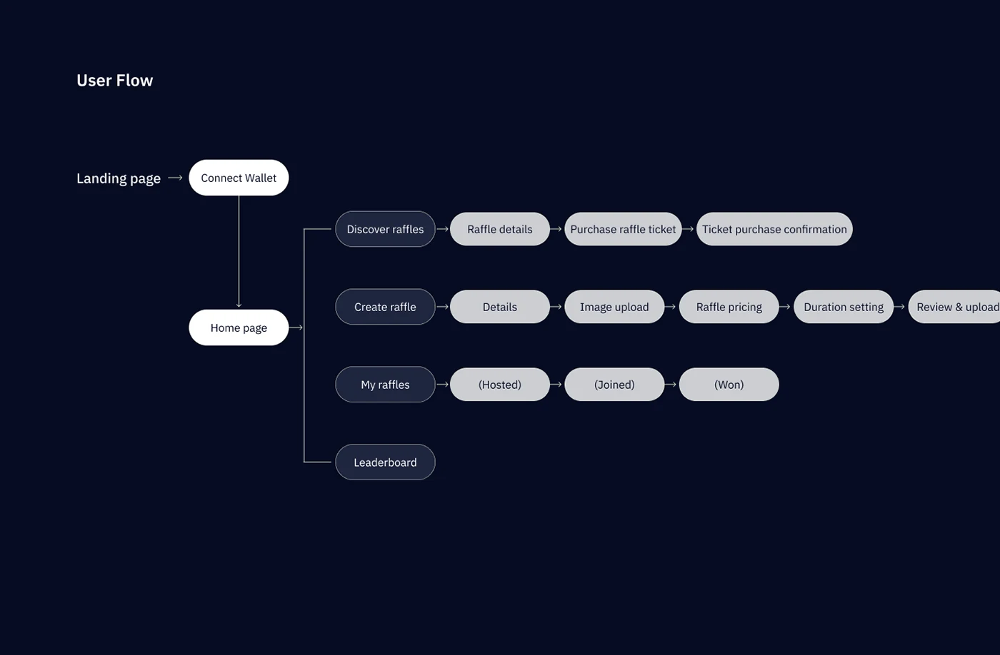
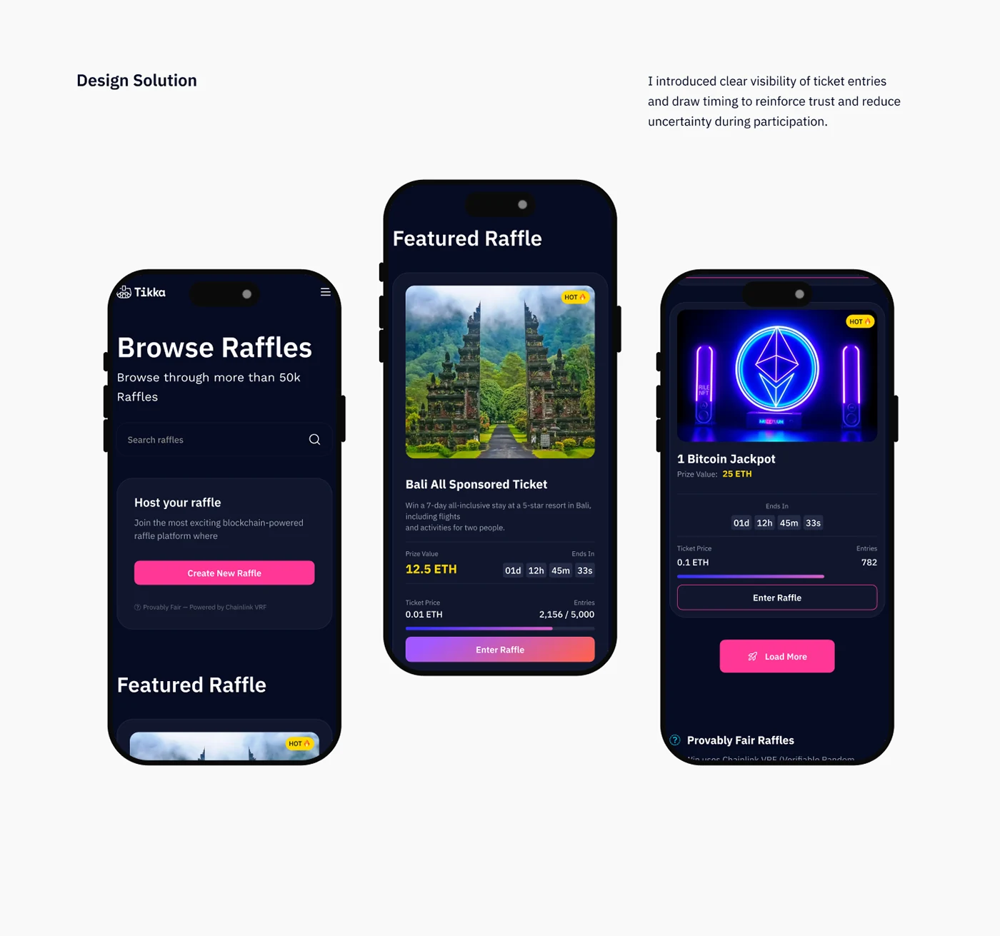
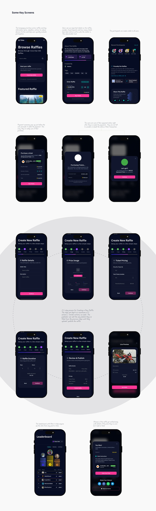

Case study 01 · Product Design · UX/UI
Tikka
Designing a transparent digital raffle platform
RoleProduct Designer
FocusTrust, clarity, simple participation
PlatformMobile first

Overview
Tikka is a digital raffle platform that allows users to participate in transparent, secure, and accessible online raffles without physical presence.
The goal was to simplify participation, improve trust, and create a seamless raffle experience for both organizers and users.
The problem
Users hesitate to join because they don't fully trust the system.
Traditional and existing raffle systems often suffer from:
The goal
Design a platform that:
Design process
How I got to the decisions
A. Understanding the space
I explored how digital raffle systems work, including:
1. Ticket purchasing
2. Winner selection
3. User engagement patterns
Insight: Users care more about trust and clarity than aesthetics.
B. Defining key user needs
"I want to know my chances clearly"
"I need to trust the system"
"I don't want a complicated process"
C. Key product decisions
1. Introduced clear ticket visibility
2. Designed simple participation flow
3. Focused on clean, distraction-free UI
4. Highlighted key actions (buy ticket, view draw, results)
User flow
From connecting a wallet to the leaderboard

Design solution
I introduced clear visibility of ticket entries and draw timing to reinforce trust and reduce uncertainty during participation.

Key design thinking
- Simplified participation into a 3-step flow
- Reduced cognitive overload by prioritizing key information
- Designed for mobile-first behavior
- Focused on trust-building UI elements
Some key screens
Browsing, buying, hosting and winning

Outcome
The redesigned experience simplifies participation, reduces cognitive load, and introduces transparency cues that can increase user trust and engagement in digital raffle systems.
The design prioritizes transparency and simplicity, which are critical for user adoption in raffle systems.
Back to the rest
More work →Have a product that needs figuring out?
Let's talk.
© Lulu 2026 · Designed in Jos, Nigeria.